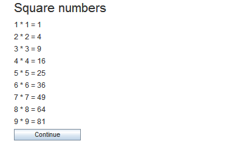

for(initialization; condition; iteration) { ... }
The for-command executes a part of your program repeatedly as long as a given expression is fulfilled.
Compared to the while-command it is usually more compact and easier to use.
Parameters
| initialization | Initialization code which is executed before the loop. Usually this is used to initialize a counting variable. |
| condition | The expression which must be fulfilled. |
| iteration | Code which is executed after each repetition. Usually this is used to increase the counting variable. |
Note that each bracket needs to be in a single line.
In order to avoid infinite loops, execution is aborted when too many repetitions occur. An error message is given in this case.
See also
if,
while
Examples
Square numbers

|

|
Multiplication table